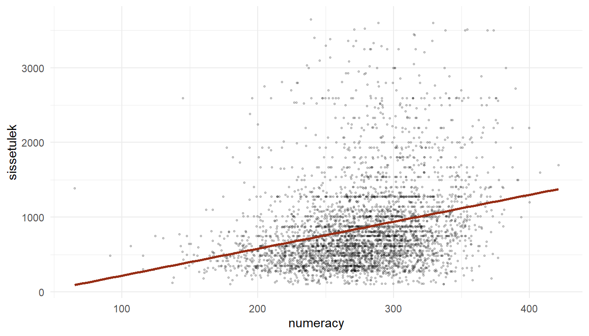
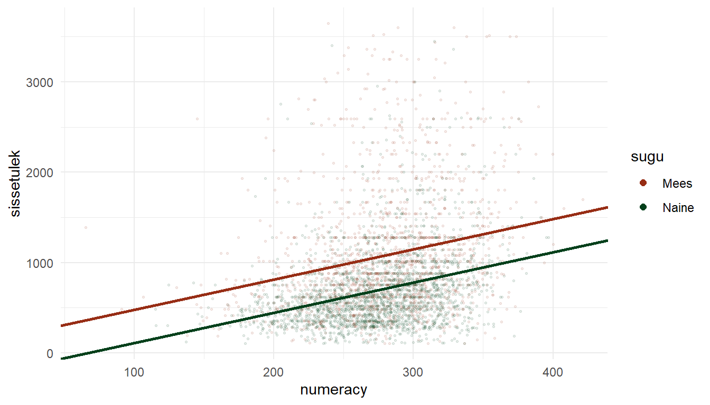
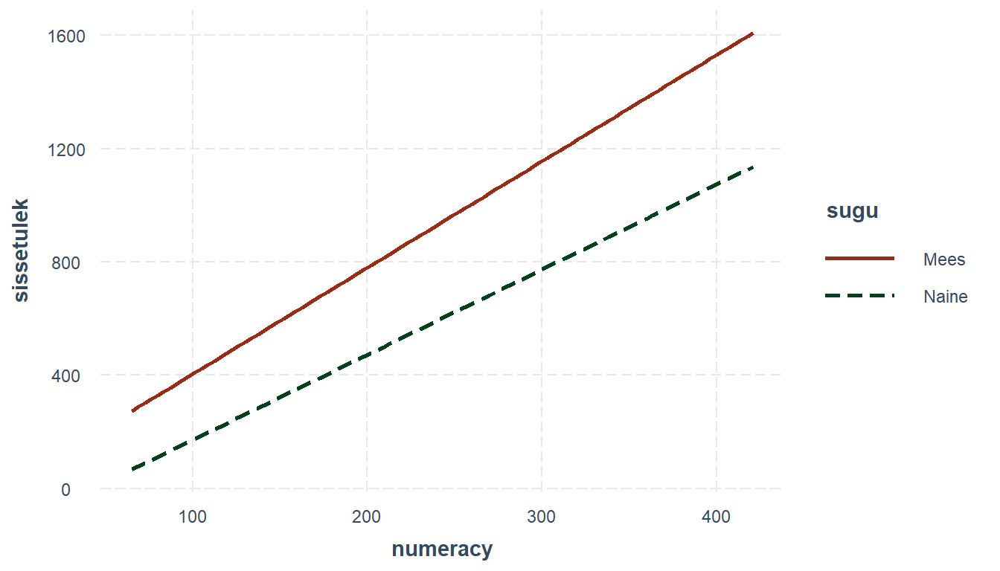
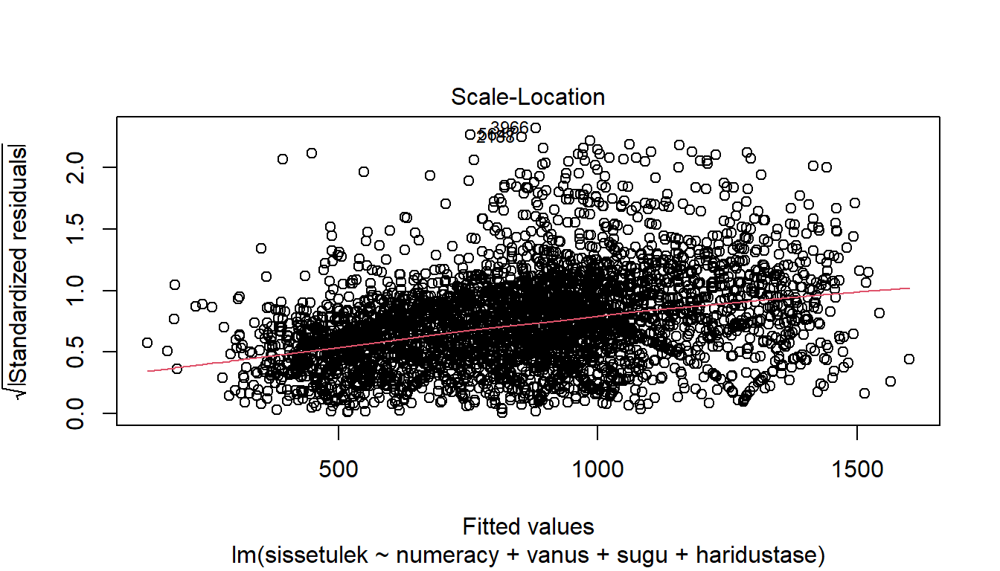

Peatükk 2 Lineaarne regressioon
2.1 Lihtne lineaarne regressioon
Lihtne lineaarne regressioon (simple linear regression) on statistiline meetod mis võimaldab hinnata ja kvantifitseerida kahe arvtunnuse vahelist suhet. Regressioonsuhte puhul eeldatakse, et üks tunnustest oleks nn sõltuv tunnus ja teine sõltumatu1, kus sõltuva tunnuse väärtus on mõjutatud (sõltub) sõltumatu tunnuse väärtusest. Kui sõltumatuid tunnuseid on rohkem kui üks, on tegemist mitmese regressiooniga (sellest hiljem), ühe sõltumatu tunnuse korral nn “lihtsa” regressiooniga (simple linear regression). Keskendume esialgu “lihtsale” variandile.
Kasutame näitena Piaaci andmestikku. Tõmbame andmestiku sisse ja uurime graafiliselt sissetuleku (sissetulek) ning matemaatilise kirjaokuse (numeracy) vahelist seost.
# Loeme kõigepealt sisse vajalikud paketid
library(dplyr)
library(ggplot2)
library(readr)
# Tõmbame sisse andmestiku
piaac <- read_csv("data/piaac.csv")
piaac %>%
ggplot(aes(x = numeracy, y = sissetulek))+
geom_point(size = 0.5, alpha = 0.3)+
theme_minimal()
Tundub, et nende kahe tunnuse vahel on seos olemas. Mida kõrgem on matemaatilise kirjaoskuse skoor, seda kõrgem on sissetulek. Me saame selle suhte kokku võtta regressioonisirge abil. ggplotis on olemas vastav funktsioon geom_smooth(), mis selle joone meile graafikule paneb. Kuna me tahame saada lineaarse regressiooni sirget, siis peame geom_smooth’is kasutama argumenti method = "lm"2
piaac %>%
ggplot(aes(x = numeracy, y = sissetulek))+
geom_point(size = 0.3, alpha = 0.2)+
geom_smooth(method = "lm", se = F, color = "#972D15")+
theme_minimal()
Regressioonisirge on väljendatav tavalise joone võrrandiga:
\[\begin{equation} Y=a+bX \end{equation}\]
kus \(a\) on vabaliige (intercept) ja \(b\) on sirge tõus (slope). Regressiooni kontekstis kutsutakse seda sirge tõusu regressioonikoefitsiendiks või regressioonikordajaks. Vabaliige tähistab \(Y\) väärtust juhul kui \(X\) on \(0\) (sirge lõikumine y-teljega) ja sirge tõus ühikulist muutust \(Y\) väärtuses kui \(X\) väärtus muutub ühe ühiku võrra. Eelneva näite puhul oleks vabaliige võrdne sissetulekuga (\(Y\)) juhul kui matemaatilise kirjaoskuse tase (\(X\)) oleks \(0\) ja sirge tõus võrdne keskmise sissetuleku muutusega, mis lisandub iga matemaatilise kirjaoskuse punktiga. Kui sirge tõus on positiivne, siis \(X\)’i väärtuse kasvades \(Y\) väärtus suureneb, kui negatiivne, siis kahaneb. Kui sirge tõus on aga \(0\), siis seos kahe tunnuse vahel puudub (iga \(X\) väärtuse korral on keskmine \(Y\) sama).
Linaarse regressioonanalüüsi eesmärgiks ongi leida parim võimalik sirge (st leida vabaliige ja regressioonikoefitsient, mis seda sirget määratlevad) tunnustevahelise lineaarse suhte kirjeldamiseks. Parim võimalik tähendab siinjuures seda, et see sirge läheb punktiparvest läbi võimalikult keskelt, st kirjeldab kõiki punkte võimalikult hästi.
2.2 Regressioon R-is
R-is käib lihtsa regressioonimudeli tegemine lm() (linear model) funktsiooniga. Loomulikult on ka teisi funktsioone, mis regressiooni jooksutamisega hakkama saavad ja hea tahtmise korral võib vastava funktsiooni ka mõningase vaevaga ise valmis kirjutada. Kuid jätame teised variandid hetkel kõrvale.
lm() funktsioonis tuleb defineerida regressioonivõrrand. Selleks peame määratlema sõltuva tunnuse, seejärel kasutama tildet (~) ning seejärel määratlema sõltumatu(d) tunnuse(d): sõltuv_tunnus ~ sõltumatu_tunnus3. Võtame eelpool toodud näite sissetuleku ja matemaatilise kirjaoskuse seosest ning defineerime regressioonimudeli, millega hindame matemaatilise kirjaoskuse mõju sissetulekule4:
lm(sissetulek ~ numeracy, data = piaac)##
## Call:
## lm(formula = sissetulek ~ numeracy, data = piaac)
##
## Coefficients:
## (Intercept) numeracy
## -140.887 3.606Lihtsalt lm() funktsiooni jookustades saame kaks numbrit - vabaliikme (intercept), mis antud näite puhul on \(-140\), ja regressioonikoefitsiendi (regression coefficient), mis antud näite puhul on \(3.6\). Mida need meile ütlevad? Nagu eelnevalt juttu oli, siis vabaliige on \(Y\) väärtus kui \(X\) on \(0\), ehk siis inimesel, kelle matemaatilise kirjaoskuse skoor on \(0\), peaks meie mudeli kohaselt sissetulek olema \(-140\). Regressioonikoefitsient aga annab meile teada kui palju \(Y\) muutub, kui \(X\) muutub ühe ühiku võrra, ehk siis kui matemaatilise kirjaoskuse skoor tõuseb ühe punkti võrra, tõuseb sissetulek keskmiselt \(3.6\) euro võrra.
Nüüd, kui teame mudeli parameetreid, saame nende abil regressioonijoone graafikule kanda ka ilma geom_smooth’ita:
piaac %>%
ggplot(aes(x = numeracy, y = sissetulek))+
geom_point(size = 0.3, alpha = 0.2)+
geom_abline(slope = 3.6, intercept = -140, color = "#972D15")+
coord_cartesian(xlim = c(0,450), ylim = c(0,3500))+
theme_minimal()
Kui me teame regressioonisirge tõusu ehk regressioonikoefitsienti ja vabaliiget, siis lähtuvalt sõltumatu tunnuse väärtustest saame prognoosida sõltuva tunnuse väärtuse:
\[\begin{equation} \hat{y}_i=b_0+b_1x_i \end{equation}\]
\(\hat{y}_i\) antud võrrandis tähistab hinnatud või prognoositud \(y\) väärtust (sellest ka see müts \(y\) peal) vaatlusele \(i\). Kui meil on regressioonivõrrand \(\hat{y}_i=-140+3.6x_i\) ja meil on mingi vaatlus \(i\), kelle \(x\) väärtus on näiteks \(200\), siis saame sellele vaatlusele prognoosida \(y\) väärtuseks \(-140+3.6\times200=580\). Ehk siis inimesel, kelle matemaatilise kirjaoskuse skoor on 200, peaks meie mudeli järgi sissetulek olema ca 580 eurot. Inimesel, kelle matemaatilise kirjaoskuse skoor on 400, peaks sissetulek olema keskmiselt \(-140+3.6\times400=1300\) eurot

Joonis 2.1: Prognoosimine y väärtust kui x on 200
2.3 Regressiooni jäägid
Samas on muidugi võimatu ühe sirgega kõiki punkte ideaalselt kirjeldada. Iga punkti ja sirge vahele jääb alati mingi viga või teisisõnu, kõik punktid (või vähemalt enamus neist) hälbivad suuremal või vähemal määral regressioonisirgest.
Mida suuremad need hälbed on, seda vähem suudab on meie mudel (regressioonisirge) kirjeldada sõltuva tunnuse variatsiooni ja seda suurem on vea määr meie mudelis. Neid hälbeid kutusutakse regressiooni jääkideks (regression residuals).

Joonis 2.2: Regressiooni jäägid
Ehk siis iga kord, kui prognoosime \(\hat{y}_i=\beta_0+\beta_1x_i\) abil \(y_i\) väärtust, teeme me mingi vea5. Seetõttu tuleb regressioonivõrrandile lisada vea komponent (\(\epsilon\)) ning võrrand ise muutub vastavalt:
\[\begin{equation} \hat{y_i}=\beta_0+\beta x_i+\epsilon \end{equation}\]
Kõige parem regressioonisirge annab joon, mille puhul jäägid on minimaalsed, ehk siis joon, mille puhul kõikide vaatluste jääkide summa oleks võimalikult väike. Kuna me ei saa jääke kokku võtta neid lihtsa kokku liites (ca pooled jäägid on väiksemad kui regressioonijoon ja ca pooled suuremad, seega nende summa oleks \(0\)), siis tuleb nad enne liitmist ruutu panna. Ja meie eesmärgiks on nüüd leida regressioonisirge, mis minimeeriks ruutjääkide summa (residual sum of squares ehk \(RSS\)) ehk siis regressioonisirge, mille puhul \(RSS\) oleks võimalikult väike6.
Eelnevast lähtuvalt on ka küllaltki loogiline, et meetodit, millega \(RSS\) minimeeritakse ja regressioonisirge ning vastavad koefitsiendid leitakse, nimetatakse vähimruutude meetodiks.
- Kasutades ggplot’i ja tehke punktdiagramm
geom_point()matemaatilise kirjaoskuse (numeracy) ja funktsionaalse lugemisoskuse (literacy) vahelisest seosest. Pange numeracy x-teljele ja literacy y-teljele.
- Kasutades
geom_abline()’i, lisage joonisele lineaarne regressioonijoon (seega peate eelnevaltlm()funktsiooniga leidma regressioonijoone vabaliikme ja regressioonikoefitsiendi)
2.4 Regressioonimudeli sobitumine
Olles leidnud joone, mis kirjeldab kahe tunnuse vahelist seost kõige paremini, võiks ju eeldada, et ülesanne on täidetud. Aga kas ikka on? Ükskõik, millisest punktiparvest võib regressioonijoone läbi panna. Kuid tulenevalt regressioonijääkide (vaatluste hälbed regressioonijoonest) suurusest saame selle joone kohta teha väga erinevaid järeldusi. Kui jäägid on väikesed, siis võime suhteliselt täpselt prognoosida sõltuva tunnuse väärtust või teha järeldusi seose kohta. Kuid mida suuremad on jäägid, seda ebatäpsem on ka meie prognoos/järeldus.
Üldjuhul kasutame regresioonanalüüsi, et teha valimi baasil järeldusi mingi üldkogumi kohta. Meid huvitab, kas see seos, mida näeme oma valimi andmete põhjal, kehtib ka üldkogumis. Saame küll eeldada, et valimipõhiselt leitud regressioonisirge on suhteliselt sarnane üldkogumi sirgele (sirge, mille me saaksime, kui kaasaksime analüüsi kõik üldkogumi liikmed), aga kui sarnane, seda me ei tea. Kui me võtaksime samast üldkogumist teise valimi, siis juhul, kui mõlemad valimid on võetud korrektselt7 ja valimid on piisavalt suured, siis peaksid nende põhjal leitud regressioonisirged olema suhteliselt sarnased, aga identsed ei ole nad praktiliselt kunagi. Kõikide võimalike valimite puhul me mingil määral alahindame või ülehindame tegelikku, populatsiooni regressioonikoefitsienti (ja ka vabaliiget). Seega, et saada aimu valimipõhise hinnangu täpsusest (vastavusest tegelikule tegelikule üldkogumi parameetrile), peaksime kuidagi välja selgitama valimi kasutamisest tuleneva vea võimaliku suuruse.
Et hinnata mudeli sobivust andmetega ja sellega leitud hinnagute täpsust, vajame mudeli kohta täiendavat infot. Eelnevalt regressioonimudelit lm() funktsiooniga jooksutades oli väljund väga lakooniline. Saime teada ainult vabaliikme ja regressioonikoefitsinedi väärtused. Tegelikult on lm() tulem muidugi märksa põhjalikum. Muule mudeliga kaasnevale infole saame ligi kui salvestame mudeli esmalt mingisse andmeobjekti ja kasutame selle andmeobjekti peal summary() käsku8.
mudel1 <- lm(sissetulek ~ numeracy, data = piaac)
summary(mudel1)##
## Call:
## lm(formula = sissetulek ~ numeracy, data = piaac)
##
## Residuals:
## Min 1Q Median 3Q Max
## -1016.7 -351.5 -129.1 179.4 2923.4
##
## Coefficients:
## Estimate Std. Error t value Pr(>|t|)
## (Intercept) -140.887 56.510 -2.493 0.0127 *
## numeracy 3.606 0.202 17.849 <2e-16 ***
## ---
## Signif. codes: 0 '***' 0.001 '**' 0.01 '*' 0.05 '.' 0.1 ' ' 1
##
## Residual standard error: 555.8 on 3982 degrees of freedom
## (3648 observations deleted due to missingness)
## Multiple R-squared: 0.07408, Adjusted R-squared: 0.07385
## F-statistic: 318.6 on 1 and 3982 DF, p-value: < 2.2e-16# Kui me ei taha mudelit salvestada, siis saab ka nii:
summary(lm(numeracy ~ literacy, data = piaac))Nüüd näeme juba märksa põhjalikumat väljundit. Vaatame mis seal kirjas on ja kuidas seda tõlgendada. Käime väljundi sektsioonide kaupa läbi (v.a. esimene rida, mis on vist niigi suht selge)
2.4.1 Jääkide jaotus
## Residuals:
## Min 1Q Median 3Q Max
## -1016.7 -351.5 -129.1 179.4 2923.4Väljundis on kirjeldatud regressiooni jääkide (residuals) jaotus. Enne nägime, et regressiooni jäägid on regressioonijoone ja tegelike, vaadeldud väärtuste vahe. Mida väiksemad on jäägid, seda täpsemini kirjeldab regressioonijoon andmete vahelist seost. Nägime ka, et pooled jäägid peaksid ideaalis olema suuremad (positiivse märgiga) kui regressioonisirge ja pooled väiksemad (negatiivse märgiga). Seega peaks jääkide keskmine olema ligikaudu \(0\) ning jääkide jaotus normaaljaotuse sarnane, kus esimene ja kolmas kvartiil, aga ka maksimum ja miinimum, on keskväärtusest umbes sama kaugel. Hiljem vaatame jääkide jaotust ka graafiliselt, mis on märksa mõistlikum viis neid uurida, kuid esmase mulje saab ka siit kätte.
2.4.2 Regressioonikoefitsiendid ja nende olulisus
## Estimate Std. Error t value Pr(>|t|)
## (Intercept) -140.887 56.510 -2.493 0.0127 *
## numeracy 3.606 0.202 17.849 <2e-16 ***
## ---
## Signif. codes: 0 '***' 0.001 '**' 0.01 '*' 0.05 '.' 0.1 ' ' 1Koefitsientide sektsioonis on esitatud mudeli oluliseim info. Estimate on hinnang mudeliga leitud regressioonikoefitsientidele. Lihtsa regressiooni puhul on meil ainult vabaliige ja ühe sõltumatu tunnuse koefitsient. Hiljem, mitmese regressiooni kontekstis, on neid koefitsiente rohkem. Vabaliikmeid on aga mudeli kohta alati üks.
Tulbas Std. Error on toodud koefitsientide standardvead. Standardviga kirjeldab meie mudeli hinnangus sisalduvat määramatust. Me kasutame regressioonikoefitsientide leidmiseks üldjuhul valimipõhiseid andmeid, kuigi tegelikult huvitavad meid ju üldkogums esinevad seosed. Valimipõhine hinnang peaks piisavalt suure valimi korral olema tõenäoliselt küllaltki sarnane üldkogumi vastavale parameetrile, kuid väikese valimi korral puhta juhuse läbi sellest arvestatavalt erineda. Standardviga näitabki kui kindlad me oma mudeli hinnangus olla saame. Mida väiksem on standardviga (võrreldes hinnangu endaga), seda kindlamad võime olla ka oma hinnangus. Standardvea suurs sõltub eelkõige jääkide hajuvusest ja valimi suurusest. Mida väiksemad on jäägid ja mida suurem on valim, seda väiksem on ka standardviga.
Standardvea abil saame t-testi abil testida, kas regressioonikoefitsient erineb oluliselt nullist (kui koefitsient on null, siis seos tunnuste vahel puudub). t-testi tulemust näitab veerg t value. t-väärtus ütleb meile kui mitme standardvea kaugusel meie regressioonikoefitsient 0-st on. Kui on piisavalt kaugel, siis saame järeldada, et leitud koefitsient on ka üldkogumis 0-st erinev. Kui kaugel on aga piisavalt kaugel? See sõltub sellest, kui suurt vea tõenäosust me oleme valmis tolereerima (mingi vea tõenäosus jääb seejuures alati). Üldjuhul valitakse selleks tõenäosuseks \(5\%\) (ütleme, et regressioonikoefitsient on statistiliselt oluline usaldusnivool \(95 \%\) või olulisusnivool \(p < 0.05\)), aga see võib olla ka \(1\%\) või \(10\%\). Siin tegelikult ei ole mingit väga konkreetset piirmäära, millest juhinduda. Kui me aga lepime kokku, et võimaliku vea tõenäosusena aktsepteerime \(5\)-te protsenti, siis peab t-väärtus olema suurem kui ca \(\pm2\) (täpne väärtus sõltub vaatluste arvust). Antud näite puhul on t-väärtused \(-2.5\) ja \(17.8\), ehk siis mõnevõrra suuremad kui \(\pm2\) ja me võime järeldada, et nii vabaliige kui regressioonikoefitsient erinevad olulisusnivool \(95\%\) oluliselt nullist (kuigi jah, vabaliige on suhteliselt piiri peal).
Õnneks ei pea me seda täpset t-väärtuse piirmäära ise välja nuputama. R arvutab meile automaatselt võimaliku vea tõenäosuse konkreetse t-väärtuse kohta. See tõenäosus on ära toodud veerus Pr(>|t|) ja seda nimetatakse p-väärtuseks. p-väärtuse tõlgendus on: kui tõenäoline on, et me saaksime niivõrd suure või suurema t-väärtuse nagu me saime, kui regressioonikoefitsient oleks üldkogumis tegelikult \(0\). Seega kui p-väärtus on näiteks \(0.04\), siis oleks tõenäosus, et me saaksime sellise regressioonikoefitsiendi, juhul kui üldkogumis oleks regressioonikoefitsient tegelikult \(0\) (ehk tunnuste vahe seost ei oleks), \(0.04\) ehk \(4\)% või väiksem. Üldjuhul tahaksime näha p-väärtust, mis on väiksem kui \(0.05\). Sellisel juhul oleks koefitsient statistiliselt oluline usaldusnivool \(95\%\). Antud näites on meil regressioonikoefitsiendi puhul tegemist väga väikeste p väärtustega (<2e-16 tähendab väiksem kui \(2\times10^{-16}\)) ja me võime olla päris kindlad, et koefitsient erineb nullist. Vabaliikme p-väärtus on aga \(0.012\), ehk kui me kasutaksime usaldusnivood \(99\%\) (mille puhul p-väärtus peaks olema väiksem kui \(0.01\)), siis me ei saaks järeldada, et see on statistiliselt oluliselt erinev nullist. Lisaks kuvab R iga p-väärtuse taha ka tärnid, mis indikeerivad selle väärtuse suurust lähtuvalt allolevast legendist.
Miks meil on üldse vaja teada kas koefitsiendid erinevad oluliselt nullist? Aga sellepärast, et kui regressioonisirge oleks \(0\), siis meie tunnuste vahel ei oleks seost (kui \(X\) muutub \(1\) ühiku võrra, siis \(Y\) muutub \(0\) ühiku võrra, ehk siis \(Y\) väärtus ei sõltu \(X\)’i väärtusest). Aga kuidas on lood vabaliikmega? Kas ka see peab erinema nullist, et meie mudelist mingit tolku oleks? Tegelikult ju ei pea. Võib täitsa vabalt juhtuda, et regressioonisirge lähebki läbi \(X\) ja \(Y\) telgede ristumiskoha (\(Y\) on \(0\) kui \(X\) on \(0\)). Sellisel juhul oleks vabaliikme t-väärtus väiksem kui \(2\) ja p-väärtus suurem kui 0.05, kuid mudeli tõlgendust see ei mõjutaks. Ehk siis tavaliselt meid vabaliikme p ja t väärtused väga ei huvita. Küll aga peaks jälgima, et standardviga väga suur (võrreldes vabaliikme endaga) ei oleks.
2.4.3 Jääkide standardviga
## Residual standard error: 555.8 on 3982 degrees of freedom
## (3648 observations deleted due to missingness)Kuidas hinnata regressiooniprognoosi täpsust, ehk siis seda kui hästi regressioonimudel sobitub andmetega (model fit)? Üheks võimaluseks on lähtuda samast loogikast mida kasutame tunnuse keskväärtuse täpsuse hindamisel. Ehk kui palju vaatlused keskmiselt erinevad keskväärtusest. Regressioonijoone puhul ei ole meil ühte keskväärtust, mille suhtes vaatluste hälbimist määrata. Kuid iga vaatluse sõltumatu tunnuse väärtuse \(x\) kohta on meil “hinnatud” sõltuva tunnuse väärtus \(\hat{y}\). Seega tuleb meil lihtsalt vaadata kui palju vaatluste \(y\) ja \(\hat{y}\) väärtused keskmiselt erinevad, ehk kui suur on keskmine viga meie mudelis. Regressioonanalüüsi kontekstis kutsutakse seda vaatluste varieeruvuse näitajat keskmiseks ruutveaks (mean squared error) ehk lühidalt \(MSE\)9. Kuna aga \(MSE\) väärtus on ruudus, siis on seda keeruline interpreteerida (samamoodi nagu ka dispersiooni). Kui me võtame ruutjuure \(MSE\)’st, \(\sqrt{MSE}\), saame regressiooni jääkide standardhälbe, mida nimetatakse jääkide standardveaks (residual standard error ehk RSE). Mida väiksem on mudeli RSE, seda paremini mudel andmetega sobitub (seda vähem hälbivad vaatlused regressioonijoonest ehk seda väiksemad on regresiooni jäägid). See, kui väike peaks RSE väärtus hea mudeli korral olema, sõltub eelkõige kontekstist ja sõltuva tunnuse skaalast (samamoodi nagu keskväärtuse standardhälve). Mingeid konkreetseid piirväärtusi siinkohal tuua ei ole võimalik.
Lisaks on siin ära toodud ka degrees of freedom ehk vabadusastmete arv jääkide standardvea arvutamisel. Sisuliselt on siin kirjas analüüsi kaasatud vaatluste arv (miinus regressioonikordajate arv, siinses mudelis 2). Ära on toodud ka analüüsist välja jäetud vaatluste arv. Need on need, kellel puudus väärtus vähemalt ühe analüüsitava tunnuse jaoks.
2.4.4 R ruut
## Multiple R-squared: 0.07408, Adjusted R-squared: 0.07385Vast oluliseimaks mudeli headuse näitajaks on \(R^2\). Regressioonanalüüsi eesmärk on seletada mingit osa sõltuva tunnuse variatiivsusest sõltumatu tunnuse abil. Seega saame regressioonimudeli puhul hinnata ja mudeli kvaliteedi iseloomustusena kasutada sõltumatu tunnuse poolt seletatud variatiivsuse osakaalu sõltuva tunnuse koguvariatiivsusest. Sõltuva tunnuse variatiivsuse (seda nimetatakse \(TSS\) ehk total sums of squares) saab jagada komponentideks: variatiivsus, mis on seletatud regressioonijoone poolt (\(ESS\) ehk explained sums of squares) ja variatiivsus, mis ei ole regressioonijoone poolt seletatud ehk siis mudeli seisukohast viga (\(RSS\) ehk residual sums of squares):
\[TSS=RSS+ESS\]
Teades erinevaid variatiivsuse komponente, saame määrata kui suur osa (mitu protsenti) sõltuva tunnuse koguvariatsioonist on seletatav regressioonijoone poolt (ehk siis sõltumatu tunnuse poolt). Seda suurust nimetatakse determinatsioonikordajaks ehk lühidalt \(R^2\)-ks.
\[\begin{equation} R^2=\frac{TSS-RSS}{TSS}=1-\frac{RSS}{TSS} \end{equation}\]
Joonis 2.3: Variatsiivsuse jagunemine
\(R^2\) jääb vahemikku \(0-1\). See mõõdab seose tugevust, st mida lähemal \(R^2\) on \(1\)’le, seda tugevam lineaarne seos tunnuste vahel on ja seda enam sõltumatu tunnus sõltuva tunnuse variatsiooni seletab, seega seda efektiivsem on regressioonifunktsiooni kasutamine selle asemel, et lihtsalt sõltuva tunnuse keskmist hinnata (kui \(R^2\) on \(0\), siis regressioonijoon langeb kokku sõltuva tunnuse keskmist tähistava joonega, st et \(ESS=0\) ja \(TSS=RSS\)).
R annab meile lisaks tavalisele \(R^2\) väärtusele (Multiple R-squared) ka nn korrigeeritud \(R^2\) väärtuse (Adjusted R-squared). Korrigeeritud \(R^2\) puhul võetakse arvesse ka sõltumatute tunnuste arvu. Iga lisanduva sõltumatu tunnusega läheb “tavaline” \(R^2\) suuremaks. Kui lisanduv tunnus eriti midagi ei seleta, siis võib see tõus olla väga väike, kuid mingi tõus paratamatult on. Korrigeeritud \(R^2\), arvestades oma valemis ka sõltumatute tunnuste arvu, annab mitme sõltumatu tunnuse korral korrektsema tulemuse. Hetkel, lihtsa regressiooni kontekstis, kus meil on ainult üks sõltumatu tunnus, annavad mõlemad variandid (enam-vähem) sama tulemuse.
2.4.5 F-väärtus ja F-test
## F-statistic: 318.6 on 1 and 3982 DF, p-value: < 2.2e-16F-väärtus, sarnaselt t-väärtusele, aitab meil hinnata kas meie mudel on statistiliselt oluline, ehk siis kas meie analüüsitavate tunnuste vahel on oluline lineaarne seos. F-väärtuseks nimetatakse mudeli abil seletatud variatiivsuse ja seletamata variatiivsuse suhet10:
\[\begin{equation} \text{F-suhe} = \frac{\text{regressioonimudeli poolt seletatud variatiivsus}}{\text{regressioonimudeli poolt seletamata variatiivus}} \end{equation}\]
Kui mudeli regressioonisirge on \(0\), siis peaks see suhe olema \(1\). See tähendab, et regressioonisirge ei seleta üldse sõltuva tunnuse varieeruvust. Kui regressioonisirge on suurem kui \(0\) siis peaks regressioonisirge poolt seletatud varieeruvus (koos juhusliku varieeruvusega) olema suurem kui ainult juhuslik dispersioon. Saame jällegi kasutada F-väärtusega kaasnevat p väärtust, et hinnata kas see F-väärtus on piisavalt suur, et saaksime mudelist lähtuvalt mingeid sisukaid järeldusi teha.
Võite märgata, et need kaks testi regressioonimudeli kohta annavad sama p väärtuse. Ja tegelikult annavad nad ka sama teststatistiku. t-statistik on lihtsalt ruutjuur F statistikust11. Võib tekkida küsimus, et miks me siis kahte testi peame kasutama. Ühe sõltumatu tunnusega regressioonimudelis otseselt ei peagi. Samas kui meil on mitu sõltumatut tunnust (nagu meil hiljem on), siis F ja t väärtused muutuvad. F-testiga saab sel juhul testida terve mudeli headust, st kas meie sõltumatud tunnused koos suudavad seletada piisavalt sõltuva tunnuse variatiivsust (tegelikult testib F-test seda, et kas vähemalt üks koefitsientidest erineb nullist). t-statistikud aga arvutatakse igale regressioonikoefitsiendile eraldi ning nendega saame kontrollida iga üksiku koefitsiendi erinevust nullist.
- Looge regressioonimudel, millega hindate numeracy mõju literacy’le.
- Salvestage see mudel ja uurige
summary()funktsiooniga. - Kas numeracy mõju literacy’le on statistiliselt oluline?
- Mitu protsenti literacy variatsioonist on selgitatav läbi numeracy?
2.5 Kategoriaalsed tunnused regressioonis
2.5.1 Üks binaarne sõltumatu tunnus
Siiani oleme käsitlenud ainult mudeleid, kus sõltumatuteks tunnusteks on pidevad muutujad. Kuid me saame mudelisse lülitada ka kategoriaalseid tunnuseid. Vaatame esmalt mudelit, kus on üks kategoriaalne sõltumatu muutuja12. Teeme Piaaci andmete põhjal mudeli, millega hindame soo mõju sissetulekule
mudel2 <- lm(sissetulek ~ sugu, data = piaac)
summary(mudel2)##
## Call:
## lm(formula = sissetulek ~ sugu, data = piaac)
##
## Residuals:
## Min 1Q Median 3Q Max
## -974.0 -344.0 -122.7 198.1 2755.2
##
## Coefficients:
## Estimate Std. Error t value Pr(>|t|)
## (Intercept) 1077.90 13.35 80.73 <2e-16 ***
## suguNaine -383.15 17.52 -21.86 <2e-16 ***
## ---
## Signif. codes: 0 '***' 0.001 '**' 0.01 '*' 0.05 '.' 0.1 ' ' 1
##
## Residual standard error: 545.8 on 3982 degrees of freedom
## (3648 observations deleted due to missingness)
## Multiple R-squared: 0.1072, Adjusted R-squared: 0.107
## F-statistic: 478 on 1 and 3982 DF, p-value: < 2.2e-16Kuidas seda tulemust tõlgendada?
Regressioonimudeliga hindame \(\hat{y_i}\) väärtust vaatlusele \(i\), kui sõltumatu tunnuse väärtus muutub ühe ühiku võrra. \(\hat{y_i}\)’i väärtus kujuneb siis lähtuvalt vabaliikme \(\beta_0\) ja regressioonikoefitsiendi \(\beta\) ning sõltumatu tunnuse \(x_i\)’i korrutise summast (pluss mingi viga): \(\hat{y_i}=\beta_0+\beta x_i+\epsilon\). Sealjuures vabaliige on \(y\) väärtus kui \(x\) on \(0\).
Meil on tunnus \(x\) (sugu) kahe kategooriaga. Mis juhtub, kui kodeerime selle ümber väärtusteks \(0\) ja \(1\) (vastavalt mees ja naine). R kusjuures teeb seda automaatselt.
\[ x_{i} = \begin{cases} 1 & \quad \text{kui on naine}\\ 0 & \quad \text{kui on mees} \end{cases} \]
Kui me selle tunnuse nüüd regressioonivõrrandisse paneme, siis mis on \(y_i\) väärtus kui \(x_i\) on \(1\) (ehk siis vaatluse sugu on naine) ja mis on \(y_i\) väärtus kui \(x_i\) on \(0\) (ehk siis vaatluse sugu on mees)?
\[ \hat{y_i}=\beta_0+\beta_1 x_i+\epsilon = \begin{cases} \beta_0+\beta_1 \times 1 = \beta_0+\beta_1 & \quad \text{kui on naine}\\ \beta_0+\beta_1 \times 0 = \beta_0 & \quad \text{kui on mees} \end{cases} \]
Ehk siis kui \(x_i\) väärtus on \(0\) (mehed), siis võrdub \(\hat{y_i}\) vabaliikmega \(\beta_0\) (sest \(\beta_1\) korrutatakse läbi nulliga) ja kui \(x_i\) väärtus on \(1\) (naised), siis vabaliikme ja regressioonikoefitsiendi summaga \(\beta_0+\beta\). Mida \(\hat{y}\) antud juhul üldse tähistab? Pidevmuutujaga regressioonis tähistas see keskmist \(y\)-i väärtust erinevate \(x\) väärtuste korral. Ja siin täpselt samamoodi. Aga nüüd on meil ainult kaks \(x\) väärtust ja \(\hat{y}\) on vastavate gruppide (meeste ja naiste) keskmine \(y\).
Seega saame regressioonivõrrandiga väljenda binaarse tunnuse mõju sõltuva tunnuse keskmisele. Lihtsalt käsitleme ühte kategooriat nn referentskategooriana ja kodeerime selle \(0\)’ks. Kui \(x\) on \(0\), siis \(y\) väärtus on võrdne vabaliikme väärtusega. Ja kui sõltumatu tunnuse väärtus muutub ühe ühiku võrra (ja rohkem ta ei saagi muutuda), siis on \(y\) väärtus võrdne vabaliikme väärtus pluss regressioonikoefitsiendi väärtus.
Kuidas me eelneva valguses oma näidet siis tõlgendama peaksime?
## Coefficients:
## Estimate Std. Error t value Pr(>|t|)
## (Intercept) 1077.90 13.35 80.73 <2e-16 ***
## suguNaine -383.15 17.52 -21.86 <2e-16 ***Sugu oli tekstiline tunnus. R saab aru, et tegemist on kategoriaalse tunnusega ja kodeerib selle sisemiselt ümber \(0\)-ks ja \(1\)-ks. Antud juhul määras ta kategooria Naine \(1\)-ks ja kategooria Mees \(0\)-ks. Kuna tegemist oli tekstilise tunnusega, siis lähtub R siin tähestikulisest järjekorrast. Regressioonivõrrand oli järgmine:
\[\begin{equation} \hat{y_i}=\beta_0+\beta x_i+\epsilon \end{equation}\]
Paneme mudeli tulemused sellesse võrrandisse:
\[ \text{numeracy}=1077.90+(-383.15)\times \text{naine} = \begin{cases} 1077.90-383.15\times 1 = 1077.90-383.15 = 694.75 & \quad \text{kui on naine}\\ 1077.90-383.15\times 0 = 1077.90 & \quad \text{kui on mees} \end{cases} \]
Ehk siis naiste keskmine sissetulek on \(694.8\) eurot (vabaliige + regressioonikoefitsient) ja meeste oma \(1077.9\) eurot (vabaliige). Erinevus on statistiliselt oluline, kuna p-väärtused nii koefitsiendi t-testi kui ka mudeli F-testi puhul olid olulisusnivool \(95\%\) olulised (väiksemad kui \(0.05\)).
Kui me paneme need keskmised joonisele ja ühendame nad joonega, näeme, et selle joone tõus (slope) on võrdne regressioonikoefitsiendiga, täpselt samuti nagu pidevtunnusega regressioonis.

2.5.2 Kolme või enama kategooriaga sõltumatu tunnus
Kusjuures me ei pea piirduma vaid binaarsete tunnustega. Aga kui kategooriaid on rohkem, tuleb meil nad binaarseks teha ehk dihhotomiseerida. Määratleme ühe kategooria referentskategooriana ja ülejäänud kategooriad kodeerime erinevates tunnustes \(1\)’ks. Seega, kui meil on näiteks hariduse tunnus kolme kategooriaga (põhiharidus, keskharidus, kõrgharidus), peame määratlema ühe referentskategooria (näiteks põhiharidus) ja tegema kaks uut tunnust (vastavalt keskhariduse ja kõrghariduse kategooriatele):
\[ kesk_{i} = \begin{cases} 1 & \quad \text{kui inimene on keskharidusega}\\ 0 & \quad \text{kui inimene ei ole keskharidusega} \end{cases} \]
\[ korg_{i} = \begin{cases} 1 & \quad \text{kui inimene on kõrgharidusega}\\ 0 & \quad \text{kui inimene ei ole kõrgaridusega} \end{cases} \]
Nüüd saame iga inimese hariduse määratleda kahe tunnuse kaudu. Ehk siis inimene, kelle puhul \(kesk = 1\) ja \(korg = 0\), on keskharidusega; inimene kelle puhul \(kesk = 0\) ja \(korg = 1\), on kõrgharidusega ja inimene kelle puhul \(keks = 0\) ja \(korg = 0\), on põhiharidusega. \(y\) väärtus kujuneb täpselt samamoodi nagu binaarse tunnuse puhul:
\[y_i=\beta_0+\beta_1 \times kesk_i+\beta_2 \times korg_i+\epsilon_i =\]
\[ = \begin{cases} \beta_0+\beta_1 \times 1+\beta_2 \times 0 = \beta_0+\beta_1 & \quad \text{kui inimene on keskharidusega}\\ \beta_0+\beta_1 \times 0+\beta_2 \times 1 = \beta_0+\beta_2 & \quad \text{kui inimene on kõrgaridusega}\\ \beta_0+\beta_1 \times 0+\beta_2 \times 0 = \beta_0 & \quad \text{kui inimene on põhiharidusega} \end{cases} \]
Vaatame kuidas see kõik R-is välja näeb. Hindame hariduse (tunnus haridustase) mõju sissetulekule:
mudel3 <- lm(sissetulek ~ haridustase, data = piaac)
summary(mudel3)##
## Call:
## lm(formula = sissetulek ~ haridustase, data = piaac)
##
## Residuals:
## Min 1Q Median 3Q Max
## -868.3 -362.5 -145.2 187.1 2881.2
##
## Coefficients:
## Estimate Std. Error t value Pr(>|t|)
## (Intercept) 763.35 13.33 57.279 <2e-16 ***
## haridustaseKõrge 217.23 19.06 11.400 <2e-16 ***
## haridustaseMadal -22.20 30.17 -0.736 0.462
## ---
## Signif. codes: 0 '***' 0.001 '**' 0.01 '*' 0.05 '.' 0.1 ' ' 1
##
## Residual standard error: 567.1 on 3981 degrees of freedom
## (3648 observations deleted due to missingness)
## Multiple R-squared: 0.03631, Adjusted R-squared: 0.03583
## F-statistic: 75 on 2 and 3981 DF, p-value: < 2.2e-16R sai jällegi ise aru, et haridustase on tekstiline tunnus ja dihotomiseeris selle automaatselt ära, tehes kaks uut tunnust: haridustaseKõrge (kus kõik kõrgharitud on kodeeritud \(1\)-na ja kõik teised \(0\)-na) ja haridustaseMadal (kus kõik madala haridustasemega on kodeeritud \(1\)-na ja kõik teised \(0\)-na). Referentskategooriaks võttis ta tähestiku järjekorras esimese kategooria Keskmine (kõik vaatlused, mille puhul nii haridustaseKõrge kui ka haridustaseMadal on \(0\)-d, on keskmise haridustasemega).
Tulemuste interpreteerimine toimub samamoodi nagu binaarse tunnuse puhul. Vabaliige tähistab referentskategooria, ehk antud juhul keskmise haridustasemega inimeste, keskmistsissetulekut (\(763.35\)), haridustaseKõrge regressioonikordaja tähistab kõrge haridustasemega inimeste skoori erinevust referentskategooria keskmisest (vabaliikmest) ja haridustaseMadal madala haridustasemega inimeste skoori erinevust referentskategooria keskmisest (vabaliikmest).
Võrrandi kujul näeb tulem välja järgmine: \[y_i=\beta_0+\beta_1 \times korge_i+\beta_2 \times madal_i+\epsilon_i =\]
\[ = \begin{cases} 763.35+217.23 \times 1+(-22.20) \times 0 = 763.35+217.23 & \quad \text{kui inimene on kõrge haridustasemega}\\ 763.35+217.23 \times 0+(-22.20) \times 1 = 763.35-22.20 & \quad \text{kui inimene on madala haridustasemega}\\ 763.35+217.23 \times 0+(-22.20) \times 0 = 763.35 & \quad \text{kui inimene on keskmise haridustasemega} \end{cases} \]
Kui kategoriaalne sõltumatu tunnus on tekstiline (character), siis valib R referentskategooriaks tähestikuliselt esimese kategooria. Kui tunnus on faktortunnus (factor), siis valib R esimese faktortaseme. Faktortasemeid saame me aga muuta. Tihti tahame referentskategooria ise valida (näiteks kõige suurema grupi või grupi, mida on loogiline teistega võrrelda). Näiteks tahame haridustasemete puhul määrata referentskategooriaks põhihariduse. Selleks teeme tunnuse faktoriks ja määrame tasemete järjestuse nii, et madal haridustase oleks esimene:
# vaatame kõigepealt mis kategooriad tunnuses on
unique(piaac$haridustase)## [1] "Keskmine" "Madal" "Kõrge" NA# Laeme forcats paketti, millega on mugav faktoritega toimetada
library(forcats)
# Kasutame funktsiooni fct_relevel()
# Meil on antud juhul vaja määrata ainult esimene tasand,
# ülejäänud tulevad tähestiku järjekorras.
piaac <- piaac %>%
mutate(haridustase_f = fct_relevel(haridustase, "Madal"))
# Baas-R-is käiks faktori tegemine nii:
#piaac$haridustase_f <- factor(piaac$haridustase,
# levels = c("Madal","Keskmine","Kõrge"))
# ja kui me nüüd regressiooni jooksutame, on referentsiks madal tase
summary(lm(sissetulek ~ haridustase_f, data = piaac))##
## Call:
## lm(formula = sissetulek ~ haridustase_f, data = piaac)
##
## Residuals:
## Min 1Q Median 3Q Max
## -868.3 -362.5 -145.2 187.1 2881.2
##
## Coefficients:
## Estimate Std. Error t value Pr(>|t|)
## (Intercept) 741.15 27.07 27.381 < 2e-16 ***
## haridustase_fKeskmine 22.20 30.17 0.736 0.462
## haridustase_fKõrge 239.43 30.30 7.902 3.54e-15 ***
## ---
## Signif. codes: 0 '***' 0.001 '**' 0.01 '*' 0.05 '.' 0.1 ' ' 1
##
## Residual standard error: 567.1 on 3981 degrees of freedom
## (3648 observations deleted due to missingness)
## Multiple R-squared: 0.03631, Adjusted R-squared: 0.03583
## F-statistic: 75 on 2 and 3981 DF, p-value: < 2.2e-16Kui meil juba on faktortunnus, aga tahame selle tasemete järjekorda muuta, saame jälle kasutada käsku fct_relevel(). Muudame haridustaseme faktortunnuses kõrgema hariduse esimeseks tasemeks:
piaac$haridustase_f <- fct_relevel(piaac$haridustase_f, "Kõrge")
# Baas-R-is käiks see nii:
#piaac$haridustase_f <- relevel(piaac$haridustase_f, ref = "Kõrge")
summary(lm(numeracy ~ haridustase_f, data = piaac))##
## Call:
## lm(formula = numeracy ~ haridustase_f, data = piaac)
##
## Residuals:
## Min 1Q Median 3Q Max
## -202.991 -26.446 2.328 28.800 150.020
##
## Coefficients:
## Estimate Std. Error t value Pr(>|t|)
## (Intercept) 289.2173 0.8172 353.93 <2e-16 ***
## haridustase_fMadal -40.8718 1.4011 -29.17 <2e-16 ***
## haridustase_fKeskmine -21.0568 1.0944 -19.24 <2e-16 ***
## ---
## Signif. codes: 0 '***' 0.001 '**' 0.01 '*' 0.05 '.' 0.1 ' ' 1
##
## Residual standard error: 42.72 on 7583 degrees of freedom
## (46 observations deleted due to missingness)
## Multiple R-squared: 0.1065, Adjusted R-squared: 0.1063
## F-statistic: 451.9 on 2 and 7583 DF, p-value: < 2.2e-16- Piaaci andmestikus on tunnus meeldib_oppida. Tehke see faktortunnuseks nii, et esimene kategooria oleks “Mõningal määral” (kategooriate nimed saate teada näiteks funnktsiooniga
unique(piaac$meeldib_oppida)) - Tehke regressioonimudel, kus hindate õppimishimu mõju sissetulekule
2.6 Mitmene regressioon
Siiani oleme käsitlenud lineaarset regressiooni, kus sõltumatuid tunnuseid oli üks. Aga on võimalik lülitada ühte mudelisse ka mitu sõltumatut tunnust. Miks see hea peaks olema?
Valdavalt üritame välja selgitada (või tegelikult mingi teooria põhjal testida) mingi tunnuse kausaalset mõju teisele tunnusele (sõltumatu tunnuse mõju sõltuvale tunnusele). Kausaalsusel on aga teatud eeldused:
- Tunnuste vaheline seos (seose olemasolu ei tähenda muidugi kohe põhjalikkust)
- Ajaline järgnevus (vastupidi ei saaks ju kuidagi olla)
- Alternatiivse seletuse/põhjuse kõrvaldamine (sõltuv tunnus võib olla sõltumatu tunnuse poolt mõjutatud läbi mõne muu tunnuse, st kaudselt)
Mitmene regressioon võimaldabki meil testida sõltumatute tunnuste otsest mõju sõltuvale tunnusele, kontrollides samal ajal teiste mudelisse lülitatud sõltumatute tunnuste mõjude suhtes (hoides teisi tunnuseid konstantsetena). Regressioonivõrrand mitme sõltumatu tunnuse puhul on sarnane ühese regressiooni võrrandiga, välja arvatud siis sõltumatute tunnuste arv. Mudel \(y\) prognoosimiseks \(p\) sõltumatute tunnuste kaudu on väljendatav järgmiselt:
\[\begin{equation} y_{i}=\beta_{0}+\beta_{1}x_{i,1}+\beta_{2}x_{i,2}+\ldots+\beta_{p}x_{i,p}+\epsilon_{i} \end{equation}\]
Kus:
\(\beta_0\) on vabaliige (ehk \(y\) väärtus kui kõik sõltumatud tunnused on \(0\)’id)
\(\beta_1\) regressioonikoeffitsient esimesele sõltumatule tunnusele \(x_1\)
\(\beta_2\) regressioonikoeffitsient teisele sõltumatule tunnusele \(x_2\)
\(\beta_{p}\) regressioonikoeffitsient tunnusele \(x_{p}\)
\(\epsilon\) on mudeli jääk igale vaatlusele
\(\beta\) coefitsinedid on leitud nii, et nendega kaalutud tunnuste väärtused minimeerivad \(\epsilon\)’i ehk mudeli viga (kogu mudeli mõistes minimeerivad ruuthälvete summat). \(\beta\) väärtus on tõlgendatav kui muutus \(y\) väärtuses, kui vastava sõltumatu tunnuse väärtus muutub ühe ühiku võrra, hoides samal ajal teisi sõltumatuid tunnuseid konstantsetena. See tähendab, et koefitsientides on teiste tunnuste mõju arvesse võetud ja meie tulemused peegeldavad nn “puhast” mõju.
Mudeli defineerimisel R-is saame sõltumatuid tunnuseid lisada + märgi abil:
mudel4 <- lm(sissetulek ~ numeracy + sugu, data = piaac)
summary(mudel4)##
## Call:
## lm(formula = sissetulek ~ numeracy + sugu, data = piaac)
##
## Residuals:
## Min 1Q Median 3Q Max
## -1181.73 -323.46 -98.77 167.86 2813.48
##
## Coefficients:
## Estimate Std. Error t value Pr(>|t|)
## (Intercept) 140.7631 55.0470 2.557 0.0106 *
## numeracy 3.3533 0.1915 17.509 <2e-16 ***
## suguNaine -365.0623 16.9196 -21.576 <2e-16 ***
## ---
## Signif. codes: 0 '***' 0.001 '**' 0.01 '*' 0.05 '.' 0.1 ' ' 1
##
## Residual standard error: 526 on 3981 degrees of freedom
## (3648 observations deleted due to missingness)
## Multiple R-squared: 0.171, Adjusted R-squared: 0.1706
## F-statistic: 410.7 on 2 and 3981 DF, p-value: < 2.2e-16Mitmese regressiooni tõlgendus on analoogne lihtsa regressiooni tõlgendusega. Võrrandi kujul on see väljendatav järgmiselt:
\[\hat{y}_{sissetulek}=\beta_0+\beta_1 \times numeracy + \beta_2 \times sugu =\]
\[ = \begin{cases} \beta_0+\beta_1 \times numeracy + \beta_2 \times 1 = (\beta_0+\beta_2)+\beta_1 \times numeracy & \quad \text{naiste puhul}\\ \beta_0+\beta_1 \times numeracy + \beta_2 \times 0 = \beta_0+\beta_1 \times lnumeracy & \quad \text{meeste puhul} \end{cases} \]
\[ = \begin{cases} 140.8+3.35 \times numeracy + (-365) \times 1 = (140.8-365)+3.35 \times numeracy & \quad \text{naiste puhul}\\ 140.8+3.35 \times numeracy + (-365) \times 0 = 140.8+3.35 \times numeracy & \quad \text{meeste puhul} \end{cases} \]
Vabaliige näitab kategoriaalse tunnuse referentskategooria (antud juhul mees) keskmist sõltuva tunnuse väärtust. Aga kuna nüüd on meil mudelis ka sõltumatu pidevtunnus, siis on see referentskatekooria keskmine juhul, kui sõltumatu pidevtunnus on \(0\). Ehk siis meie näite puhul tähistab vabaliige (\(140.8\)) meeste sissetulekut juhul kui nende matemaatilise kirjaoskuse skoor on \(0\). suguNaine regressioonikordaja näitab naiste sissetuleku erinevust meestest. See võtab arvesse ka matemaatilise kirjaoskuse skoori. Ehk siis kõikide matemaatilise kirjaoskuse väärtuste puhul on on naiste sissetulek \(365\) eurot meestest madalam (st soo mõju on kontrollitud matemaatilise kirjaoskuse suhtes). numeracy regressioonikordaja näitab jällegi sissetuleku muutust (\(3.35\)) kui matemaatiline kirjaoskus muutub ühe ühiku võrra. Kuna ka sugu on mudelis arvesse võetud, kehtib see muutus võrdselt nii naitsele kui meestele (mõju on kontrollitud soo suhtes).
Mõnevõrra lihtsam on seda tulemust interpreteerida graafiliselt:
piaac %>%
ggplot(aes(x = numeracy, y = sissetulek, color = sugu))+
geom_point(alpha = 0.1, size = 0.3)+
geom_abline(intercept = 140.8, slope = 3.35, color = "#972D15")+
geom_abline(intercept = 140.8-365, slope = 3.35, color = "#02401B")+
scale_colour_manual(values = c("Mees" = "#972D15", "Naine" = "#02401B"))+
theme_minimal()+
guides(color = guide_legend(override.aes = list(size = 2, alpha = 1)))
Lihtsam võimalus seoseid graafiliselt esitada on kasutada paketist interactions funktsiooni interaction_plot(). See on küll mõeldud eelkõige koosmõjude plottimiseks, kuid toimib ka tavalisete seoste kujutamisel.
library(interactions)
interact_plot(mudel4, pred = numeracy, modx = sugu, colors = c("#972D15", "#02401B"))2.6.1 Kaks pidevat sõltumatut muutujat
Vaatame ka olukorda, kus meil on kaks pidevat sõltumatut tunnust - matemaatiline kirjaoskus ja vanus:
mudel5 <- lm(sissetulek~numeracy+vanus, data = piaac)
summary(mudel5)##
## Call:
## lm(formula = sissetulek ~ numeracy + vanus, data = piaac)
##
## Residuals:
## Min 1Q Median 3Q Max
## -1036.6 -349.5 -128.9 178.7 2944.0
##
## Coefficients:
## Estimate Std. Error t value Pr(>|t|)
## (Intercept) 25.3372 67.3417 0.376 0.707
## numeracy 3.4841 0.2033 17.137 < 2e-16 ***
## vanus -3.2210 0.7138 -4.512 6.59e-06 ***
## ---
## Signif. codes: 0 '***' 0.001 '**' 0.01 '*' 0.05 '.' 0.1 ' ' 1
##
## Residual standard error: 554.5 on 3981 degrees of freedom
## (3648 observations deleted due to missingness)
## Multiple R-squared: 0.07879, Adjusted R-squared: 0.07833
## F-statistic: 170.3 on 2 and 3981 DF, p-value: < 2.2e-16Tõlgendame seda järmiselt:
- Kui matemaatiline kirjaoskus tõuseb ühe punkti võrra, siis sissetulek tõuseb \(3.48\) euro võrra, hoides vanust konstantsena (st see seos kehtib kõikide vanuste jaoks).
- Kui vanus tõuseb ühe aasta võrra, siis sissetulek langeb \(3.2\) euro võrra, hoides funktsionaalset lugemisoskust konstantsena (st see seos kehtib kogu funktsionaalse lugemisoskuse skaala ulatuses).
- Juhul kui nii vanus oleks \(0\) aastat ja matemaatiline kirjaoskus oleks \(0\) punkti, oleks sissetulek \(25.3\) eurot (kuna selline olukord on suhteliselt võimatu, siis me sellistel puhkudel vabaliiget ei interpreteeri).
Et taolisest mudelist paremini aru saada võime kasutada 3D punktdiagrammi
#library(car)
#scatter3d(piaac$numeracy,piaac$sissetulek, piaac$vanus)- Looge regressioonimudel, millega hindate numeracy, vanus, sugu ja haridustase mõju sissetulekule.
- Milliste tunnuste mõju sissetulekule on statistiliselt oluline?
- Esitage vanuse ja soo mõju sissetulekule graafiliselt.
2.7 Koosmõjud
Eelnevas näites vaatasime sissetuleku sõltuvust matemaatilise kirjaoskuse tasemest soo lõikes, ja nägime, et kui lisame mudelisse soo tunnuse, siis saame klasside kohta eraldi regressioonijooned. Kuid need regressioonijooned olid paralleelsed, mis tähendab et nii meeste kui naiste hulgas oli funktsionaalse lugemisoskuse ja matemaatilise kirjaoskuse suhe mudeli järgi sama. Kuid kas see on alati väga realistlik eeldus? Võib ju vabalt olla, et see seos erineb soo lõikes.
Kui me arvame, et see võib nii olla, st sõltumatu tunnuse mõju sõltuvale tunnusele sõltub omakorda mingist muust tunnusest, saame mudelisse lisada nende kahe tunnuse koosmõju (interaktsiooni). Selleks peame moodustame uue tunnuse, mis tuleneb nende tunnuste, mille suhtes me koosmõju hinnata tahame, korrutisest. Kui me nüüd selle uue tunnuse mudelisse kaasame, siis hindame sellele ka regressioonikoefitsiendi. Regressioonivõrrand pidevtunnuse ja kategoriaalse tunnuse koosmõjuga näeks välja nii:
\[\hat{y}_{sissetulek}=\beta_0+\beta_1 \times numeracy + \beta_2 \times naine + \beta_3 \times naine \times numeracy =\]
\[ = \begin{cases} \beta_0+\beta_1 \times numeracy + \beta_2 \times 1 + \beta_3 \times 1 \times numeracy = (\beta_0+\beta_2)+(\beta_1+\beta_3) \times numeracy & \quad \text{naised}\\ \beta_0+\beta_1 \times numeracy + \beta_2 \times 0 + \beta_3 \times 0 \times numeracy = \beta_0+\beta_1 \times numeracy & \quad \text{mehed} \end{cases} \]
R-is saame taolise mudeli defineerida järgmiselt:
mudel8 <- lm(sissetulek ~ numeracy * sugu, data = piaac)
summary(mudel8)##
## Call:
## lm(formula = sissetulek ~ numeracy * sugu, data = piaac)
##
## Residuals:
## Min 1Q Median 3Q Max
## -1213.35 -322.79 -99.79 166.87 2802.32
##
## Coefficients:
## Estimate Std. Error t value Pr(>|t|)
## (Intercept) 28.4609 79.7161 0.357 0.7211
## numeracy 3.7552 0.2815 13.340 <2e-16 ***
## suguNaine -157.9875 107.6870 -1.467 0.1424
## numeracy:suguNaine -0.7476 0.3840 -1.947 0.0516 .
## ---
## Signif. codes: 0 '***' 0.001 '**' 0.01 '*' 0.05 '.' 0.1 ' ' 1
##
## Residual standard error: 525.8 on 3980 degrees of freedom
## (3648 observations deleted due to missingness)
## Multiple R-squared: 0.1718, Adjusted R-squared: 0.1712
## F-statistic: 275.2 on 3 and 3980 DF, p-value: < 2.2e-16# Sama tulemuse saaksime, kui kirjutaksime:
#lm(numeracy ~ literacy + sugu + literacy:sugu, data = piaac)Koosmõjudega mudeli vabaliikmed ja regressioonikoefitsiendid kujunevad järgmiselt:
\[\hat{y}_{sissetulek}=\beta_0+\beta_1 \times numeracy + \beta_2 \times naine + \beta_3 \times naine \times numeracy =\]
\[ = \begin{cases} 28.5+3.8 \times numeracy + (-157) \times 1 + (-0.7) \times 1 \times numeracy = (28.5-157)+(3.8-0.7) \times numeracy & \quad \text{naised}\\ 28.5+3.8 \times numeracy + (-157) \times 0 + (-0.7) \times 0 \times numeracy = 28.5+3.8 \times numeracy & \quad \text{mehed} \end{cases} \]
Seega selles mudelis erinevad kategoriaalse tunnuse lõikes nii vabaliikme väärtused kui ka regressioonisirge tõusud. Kui me nüüd selle mudeli tulemused graafikule paneme, siis näeme, et regressioonisirged ei ole enam paralleelsed. Mida suurem on matemaatilise kirjaoskuse tase, seda suurem on erinevus meeste ja naiste sissetulekutes.
interact_plot(mudel8, pred = numeracy, modx = sugu, colors = c("#972D15", "#02401B"))
2.7.1 Koosmõjud kategoriaalsete tunnuste puhul
Enne oli juttu, et kahe kategoriaalse sõltumatu tunnusega mudel ilma koosmõjudeta pole väga mõistlik. Vaatame nüüd kuidas see koosmõjudega välja näeks:
mudel9 <- lm(sissetulek ~ sugu * haridustase, data = piaac)
summary(mudel9)##
## Call:
## lm(formula = sissetulek ~ sugu * haridustase, data = piaac)
##
## Residuals:
## Min 1Q Median 3Q Max
## -1126.25 -311.40 -99.32 163.85 2639.98
##
## Coefficients:
## Estimate Std. Error t value Pr(>|t|)
## (Intercept) 1004.53 17.95 55.967 <2e-16 ***
## suguNaine -458.80 24.76 -18.533 <2e-16 ***
## haridustaseKõrge 252.60 28.59 8.836 <2e-16 ***
## haridustaseMadal -73.55 37.63 -1.955 0.0507 .
## suguNaine:haridustaseKõrge 50.69 36.65 1.383 0.1667
## suguNaine:haridustaseMadal 10.76 56.52 0.190 0.8491
## ---
## Signif. codes: 0 '***' 0.001 '**' 0.01 '*' 0.05 '.' 0.1 ' ' 1
##
## Residual standard error: 526.1 on 3978 degrees of freedom
## (3648 observations deleted due to missingness)
## Multiple R-squared: 0.1715, Adjusted R-squared: 0.1705
## F-statistic: 164.7 on 5 and 3978 DF, p-value: < 2.2e-16Sellisest mudelist saame välja lugeda kõikide gruppide ristlõigete (kõrge haridustasemega naised, kõrge haridustasemega mehed jne) keskmised. Arvutame näiteks välja kõrge haridustasemega naiste ja madala haridustasemega meeste keskmised matemaatilise lugemisoskuse skoorid:
\[\hat{y}_{sissetulek}=\beta_0+\beta_1 \times naine + \beta_2 \times korge + \beta_3 \times madal + \beta4 \times nainekorge + \beta_5 \times nainemadal =\]
\[ = \begin{cases} 1004.5+(-458.8) \times 1 + 252.60 \times 1 + (-73.55) \times 0 + 50.69 \times 1 + 10.76 \times 0 = & \quad \text{kõrge haridustasemega naised}\\ 1004.5+(-458.8) \times 0 + 252.60 \times 0 + (-73.55) \times 1 + 50.69 \times 0 + 10.76 \times 0 = & \quad \text{madala haridustasemega mehed} \end{cases} \]
\[ = \begin{cases} 1004.5+(-458.8) + 252.60 + 50.69 = 849 & \quad \text{kõrge haridustasemega naised}\\ 1004.5 + (-73.55) = 931 & \quad \text{madala haridustasemega mehed} \end{cases} \]
Vaatame seda mudelit ka graafiliselt (kasutame paketi jtools funktsiooni cat_plot()):
cat_plot(mudel9, pred = haridustase, modx = sugu, colors = c("#972D15", "#02401B"))
- Looge koosmõjuga regressioonimudel, millega hindate soo ja laste olemasolu mõju sissetulekule.
- Esitage koosmõjud graafikul (
cat_plot()abiga)
2.8 Mudelite võrdlemine
Milline on hea mudel? See peaks muidugi seletama võimalikult palju sõltuva tunnuse varieeruvusest. Samas peaks see olema ka võimalikult ökonoomne, st see peaks sisaldama ainult tunnuseid, mis mudelit oluliselt paremaks teevad. Siin on rõhk sõnal “oluliselt.” Iga lisanduv tunnus teeb mudeli mingil määral paremaks, kuid see paranemine võib olla mikroskoopiline. Kuidas siis hinnata, kas mudel \(n+1\) tunnusega on oluliselt parem kui \(n\) tunnusega mudel?
Me saame vaadata lisanduva tunnuse standardviga, t-väärtust ja sellega seonduvat p-väärtust. Kuid nagu enne jutuks oli, testib see ainult konkreetse koefitsiendi erinevust nullist. Meid aga huvitab kogu mudeli kvaliteet. Võimalus on ka võrrelda mudelite \(R^2\) väärtusi, kuid need on pigem kirjeldavad, ega anna meile indikatsiooni sellest kas üks väärtus on oluliselt parem kui teine.
Erinevate mudelite statistiliselt olulist erinevust saame testida hii-ruut testiga kasutades anova() funktsiooni. Seda saab teha ainult siis kui mudelid on omavehl seotud (nested), st keerukam (rohkemate tunnustega) mudel peab sisdaldama kõiki lihtsama mudeli tunnuseid.
mudel_test1 <- lm(numeracy ~ literacy, data = piaac)
mudel_test2 <- lm(numeracy ~ literacy + sugu, data = piaac)
anova(mudel_test1, mudel_test2, test = "Chisq")## Analysis of Variance Table
##
## Model 1: numeracy ~ literacy
## Model 2: numeracy ~ literacy + sugu
## Res.Df RSS Df Sum of Sq Pr(>Chi)
## 1 7584 4848657
## 2 7583 4734885 1 113772 < 2.2e-16 ***
## ---
## Signif. codes: 0 '***' 0.001 '**' 0.01 '*' 0.05 '.' 0.1 ' ' 1Tõlgendame jällegi testi p-väärtust. Kui see on väiksem kui \(0.05\) (usaldusnivool \(95\%\)), siis võime järeldada, et mudelid on oluliselt erinevad, mis tähendab omakorda, et lisatud tunnus tõstis mudeli selgitusvõimet olulisel määral.
2.9 Regressioonimudeli eeldused
Nagu iga meetodi puhul, on ka lineaarsel regressioonanalüüsil rida eeldusi, mis peavad olema täidetud, et analüüsist korrektseid järeldusi oleks võimalik teha.
- Esimene ja vahest ka kõige olulisem eeldus on lineaarne suhe sõltuva ja sõltumatu(te) tunnuse vahel. Kõrvaloleval joonisel on esitatud neli andmestikku, mille regressioonisirged on identsed (\(y=3+0.5x\)). Tegelikult on identsed ka kõik muud andmete statistilised omadused (\(x\)’i keskmine, \(y\)’i keskmine, \(x\)’i dispersioon, \(y\)’i dispersioon ja ka korrelatsioon). Ometi on visuaalselt näha, et kõik andmestikud on väga erinevad. Seega peaks regressioonanalüüsi (või tegelikult ükskõik mis analüüsi) puhul olema alati esimene samm neid graafiliselt uurida. Kui tunnuste vaheline seos ei ole lineaarne, piisab mõnel juhul tunnuste mittelineaarsest transformeerimisest (see peaks olema ka muidugi teoreetiliselt põhjendatud). Kui seos on eksponentsiaalne, siis võib kaaluda log-transformatsiooni. Kui seos on paraboolne, siis võib kaaluda ruutu tõstetud tunnuse lisamist (\(y = \beta_0+\beta_1x+\beta_2x^2\)). Taoliste transformatsioonide juures peab meeles pidama, et koos nendega muutub ka mudeli tõlgendus.

Joonis 2.4: Anscombe kvartett
Lineaarse regressiooni puhul peaks tähelepanelik olema ka erindite (outliers)suhtes, st vaatluste suhtes, mis erinevad teistest väga olulisel määral (nagu ka kõrvalolevalt jooniselt näha). Mõnede andmete puhul on erindid paratamatud (näiteks sissetuleku puhul, kus suurem osa inimesi on koondunud keskmise sissetuleku ümber, kuid mõned üksikud teenivad sellest oluliselt enam). Sellisel juhul tasuks kaaluda jällegi tunnuse transformeerimist (sissetuleku puhul näiteks log-skaalale). Kui tegemist on mõne üksiku erindiga, võiks ju selle aluseks oleva vaatluse ka lihtsalt analüüsist välja jätta. Siin tuleks aga olla väga ettevaatlik. Andmete või sellest saadava informatsiooni tahtlik vähendamine (näiteks pidevtunnuste kategoriseerimine) ei ole üldiselt kunagi hea mõte. Seda enam ei ole hea mõte andmete vähendamine eesmärgiga mudelit paremaks teha. Kui aga erindite tekkimine on mingil moel teoreetiliselt seletatav või tulenenud näiteks veast andmekorjel, siis võib seda loomulikult teha.
Jääkide dispersiooni homogeensus (homoscedasticity). Jäägid peaksid hinnatud väärtuste lõikes olema homogeense ja konstantse variatiivsusega, st ühtlaselt jaotunud kõikide \(\hat{y}\) väärtuste ümber. Selle eelduse rikkumine mõjutab eelkõige standardvigu (need ei kehti enam kõikidele \(\hat{y}\) väärtustele ühtlaselt) ja seeläbi loomulikult ka usalduintervalle ning p-väärtusi. Lahenduseks võivad olla nn robustsed standardvead (robust standard errors), mis võtavad varieeruvuse erinevust arvesse.
## Robust standard errors
mudel6 <- lm(numeracy ~ literacy * sugu,
data = piaac)
# Tavalised standardvead
summary(mudel6)##
## Call:
## lm(formula = numeracy ~ literacy * sugu, data = piaac)
##
## Residuals:
## Min 1Q Median 3Q Max
## -102.441 -16.551 -0.094 16.867 88.714
##
## Coefficients:
## Estimate Std. Error t value Pr(>|t|)
## (Intercept) 36.129029 2.620050 13.789 < 2e-16 ***
## literacy 0.871523 0.009417 92.543 < 2e-16 ***
## suguNaine 4.596729 3.619797 1.270 0.204164
## literacy:suguNaine -0.044937 0.012972 -3.464 0.000535 ***
## ---
## Signif. codes: 0 '***' 0.001 '**' 0.01 '*' 0.05 '.' 0.1 ' ' 1
##
## Residual standard error: 24.97 on 7582 degrees of freedom
## (46 observations deleted due to missingness)
## Multiple R-squared: 0.6948, Adjusted R-squared: 0.6946
## F-statistic: 5753 on 3 and 7582 DF, p-value: < 2.2e-16# Robustsed standardvead
library(sandwich)
library(lmtest)
coeftest(mudel6, vcov. = vcovHC(mudel6))##
## t test of coefficients:
##
## Estimate Std. Error t value Pr(>|t|)
## (Intercept) 36.1290294 2.7887350 12.9553 < 2.2e-16 ***
## literacy 0.8715229 0.0098976 88.0538 < 2.2e-16 ***
## suguNaine 4.5967288 3.8313081 1.1998 0.2302621
## literacy:suguNaine -0.0449372 0.0135552 -3.3151 0.0009203 ***
## ---
## Signif. codes: 0 '***' 0.001 '**' 0.01 '*' 0.05 '.' 0.1 ' ' 1# Saab ka nii
library(sandwich)
vcovHC(mudel6) %>%
diag() %>%
sqrt()## (Intercept) literacy suguNaine literacy:suguNaine
## 2.788735004 0.009897618 3.831308067 0.013555193Jääkide normaaljaotus. Regressiooni jäägid peaksid olema normaaljaotusega \(e_i \sim N(0, \sigma^2)\), seega enamus jääke peaks jääma nulli ümber ning mida suuremad jäägid, seda vähem neid olema peaks. See eeldus on eelkõige oluline regressioonikoefitsientide t-testi jaoks.
Jääkide sõltumatus. Ühe vaatluse jäägid ei tohiks olla korreleeritud teise vaatluse jääkidega. Selline olukord võib tekkida näiteks siis kui meil mudelist välja jäänud mingi oluline tunnus (ühe tunnuse regressiooni puhul on see muidugi vaid hüpoteetiline olukord), näiteks hindame õpilaste testiskoore lähtuvalt nende õppimisele kulunud ajast, kuid ei arvesta, et õpilased tulevad näiteks erinevatest koolidest, kus võib olla erinev tase. Seega õpilaste tulemused ei ole enam sõltumatud, vaid sõltuvad koolist. Regressioonikoefitsientide standardvigade arvutamisel lähtutakse eeldusest, et jäägid on sõltumatud. Kui jäägid on korreleeritud, siis võib juhtuda, et me alahindame standardvigade suurust ehk siis oleme oma tulemustes ülemäära kindlad (usaldusintervallid ning p-väärtused tulevad liialt väikesed) ning võime näha seoseid seal kus neid tegelikult ei ole. Lahenduseks võiks olla puuduolevate tunnuste lisamine mudelisse (konkrteetse näite puhul kooli tunnus).
Kui kaks sõltumatut tunnust on teineteisega väga tugevalt seotud põhjusteab see nn kollineaarsust. See võib tekitada probleeme mudeli hindamisel ning ka tõlgendusel. Lisaks kipuvad standardvead liialt suureks minema, mis tähendab seda, et kaotame oma tulemuste täpsuses ja võime mitte näha seoseid seal, kus need tegelikult olemas on. Seega võiks tähele panna, et korrelatsioon sõltumatute muutujate vahel peaks alati olema väiksem kui korrelatsioon sõltuva ja sõltumatu muutuja vahel.
2.10 Kuidas eelduste täidetust hinnata?
Eelduste hindamiseks on loomulikult mitmeid teste, kuid kõige lihtsam on seda mudeli diagnostiliste joonistega.
mod <- lm(formula = sissetulek ~ numeracy + vanus + sugu + haridustase,
data = piaac)plot(mod, 1) Kontrollime mittelineaarse seose olemasolu. Punktid peaksid olema ühtlaselt ümber keskmise joone jaotunud. Ei tohiks olla mingit ilmset mustrit.
Kontrollime mittelineaarse seose olemasolu. Punktid peaksid olema ühtlaselt ümber keskmise joone jaotunud. Ei tohiks olla mingit ilmset mustrit.
plot(mod, 2)Kas jäägid on normaalselt jaotunud? Punktid peaksid ühtima diagonaalse joonega.
plot(mod, 3)Kas jääkide dispersioon on homogeenne? Punane joon peaks olema horisontaalne ja punktid peaksid olema ühtlaselt jaotunud ega tohiks mingit mustrit moodustada.
plot(mod, 5) Kas mudelis on mudelit oluliselt mõjutavaid erindeid? Kui on, siis peaksid need olema paremal all või paremal üleval nurgas ning kaugemal kui punktiirjoon (antud juhul neid ei ole ja seega ei ole ka punktiirjoont näha).
Inglisekeelses terminoloogias kasutatakse sõltuva tunnuse puhul peale dependent variable ka nimetusi response või outcome variable ja sõltumatu tunnuse puhul peale independent variable ka predictor või explanatory variable. Prediktor on ka eesti keeles kasutusel.↩︎
Defaultis annab
geom_smoothmeile mittelineaarse regressioonijoone (vastavalt sellele palju vaatlusi on, kas gam või loess), mis üritab tunnustevahelist suhet andmete kõikides punktides võimalikult täpselt kirjeldada.↩︎Hiljem, kui meil on mitu sõltumatut tunnust, eristame tunnused plussiga:
sõltuv_tunnus ~ sõltumatu_tunnus_1 + sõltumatu_tunnus_2 + ...↩︎Tegelikult ei ole selline mudel korrektne. Sissetuleku jaotus ei vasta hästi regressiooni nõuetele. Miks ei vasta ja kuidas see vastama panna, sellest natuke hiljem. Kuid hetkel kasutame seda puhtalt didaktilistest kaalutustest lähtuvalt.↩︎
Mida saab väljendada kui \(\epsilon_i=y_i-\hat{y}_i\)↩︎
\(RSS= = e_1^2 + e_2^2 + ... + e_n = \sum_{i=1}^{n}(y_i-\hat{y}_i)^2\)↩︎
Korrektse valimi võtmise all peame siinkohal silmas eelkõige juhuvalikut. Kõikidel populatsiooni liikmetel/elementidel peab olema võrdne võimalus valimisse sattuda. Kui üldpopulatsiooniks on Eesti elanikkond, aga valimisse võtaksime ainult Tallinna elanikud, siis antud valimi põhjal tehtavad järeldused ei oleks kuidagi üldistatavad kõigile Eesti elanikele, vaid ikkagi ainult tallinnlastele. Lisaks juhuvalimile on veel terve rida spetsiifilisemaid valimidisaine (stratifitseeritud valim, klastervalim jne) mida me hetkel ei käsitle. Kuid tuleb meeles pidada, et keerulisemate valimidisainide puhul tuleb hilisemas analüüsis ja järelduste tegemise käigus valimi moodustamise loogikat arvesse võtta.↩︎
Ka
summary()ei anna välja kogu mudeliobjektis sisalduvat infot. Et näha mida mudeliobjekt veel sisaldab, võib kasutadastr(mudeliobjekt)käsku.↩︎\(MSE=\frac{\sum_{i=1}^{n}(y_i-\hat{y}_i)^2}{n-2}\)↩︎
Natuke täpsemalt väljendades \(F = \frac{(TSS-RSS)/p}{RSS/(n-p-1)}\), kus \(n\) on valimi suurus ja \(p\) on regressioonikoefitsientide (sõltumatute muutujate) arv.↩︎
\((t^{*}_{(n-2)})^2=F^{*}_{(1,n-2)}\)↩︎
Sellist mudelit nimetatakse ka ANOVA-ks või täpsemlat One-Way ANOVA-ks (kuna tegemist on ainult ühe kategoriaalse sõltumatu muutujaga)↩︎